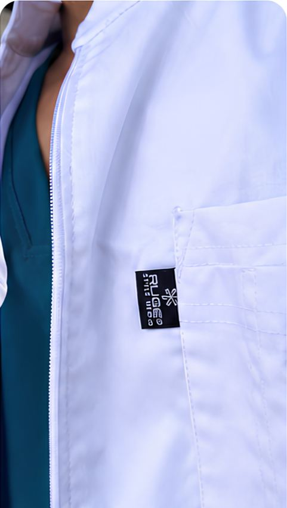

Nuevo lanzamiento
Mandil médico
Diseñado para cuidar y destacar
Comodidad, protección y estilo profesional en cada jornada.
- AntifluidoProtección avanzada en tu día a día.
- LigeroTela suave que te acompaña siempre.
- ProfesionalImagen impecable en todo momento.
- Cómodo y ligeroTela suave que te acompaña durante todo el día.
- TranspirablePermite la ventilación y te mantiene fresco.
- ResistenteCosturas reforzadas para mayor durabilidad.
- Diseñado para tiCorte unisex que se adapta a tu figura.
- Tela antifluido de alta calidad
- Bolsillo en el pecho para mayor practicidad
- Dos bolsillos inferiores amplios
- Cierre frontal con cremallera oculta
- Puños tejidos que brindan un ajuste cómodo
- Fácil de lavar, no se encoge ni se deforma
- Ideal para clínicas, hospitales y consultorios
BlancoAzul marino
Tallas
disponiblesXSSMLXLXXL